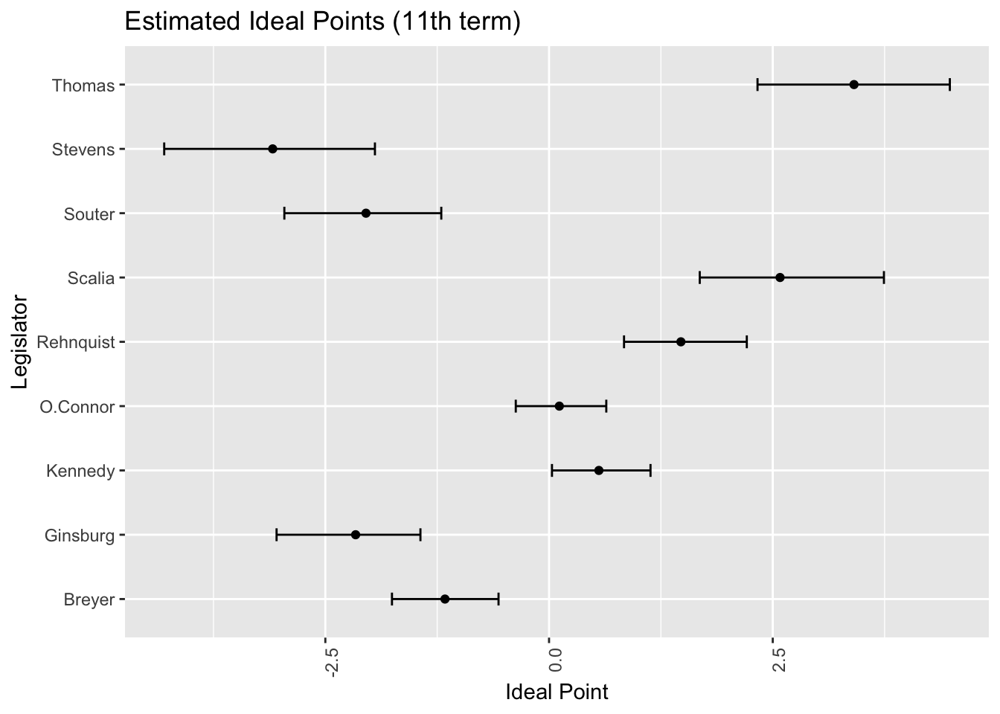
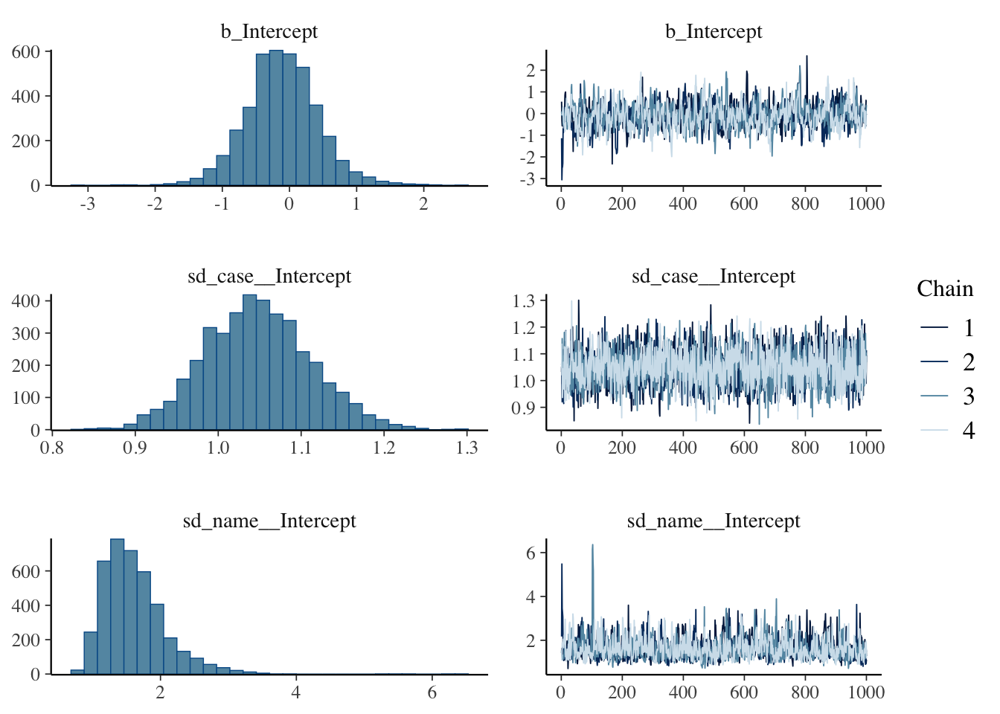

理想点解析とモデル平均
PDMP サンプラーによる大規模ベイズ推定
Bayesian
Statistics
MCMC
2024-11-22
理想点解析とは，政治学において国会議員のイデオロギーを定量化・視覚化する方法論である．この手法は多くの側面を持ち，多次元展開法 (MDU: Multidimensional Unfolding) であると同時に項目反応モデルでもある．ここでは既存のパッケージを用いて理想点解析を行う方法を紹介する．
A Blog Entry on Bayesian Computation by an Applied Mathematician
$$
$$
本稿では次の３つのパッケージを紹介する：
pscl パッケージinstall.packages("pscl")voteview データこのパッケージでは，Keith T. Poole と Howard Rosenthal が 1995 年から運営しているサイト voteview.com のデータを利用するための関数 readKH() が提供されている．
例えば連邦議会 (U.S. Congress) 117 議会期 (Congress) 2021.1.3-2023.1.3 の上院 (Senate) の点呼投票データを読み込むには以下のようにする：1
library(pscl)
s117 <- readKH("https://voteview.com/static/data/out/votes/S117_votes.ord",
desc="117th U.S. Senate")s117 は rollcall オブジェクト，８つのフィールドを持った配列である．
s117$votes データは \(n=104\) 議員の計 \(m=949\) 回の投票からなる \(10\)-値の行列である．
summary(s117)
Summary of rollcall object s117
Description: 117th U.S. Senate
Source: https://voteview.com/static/data/out/votes/S117_votes.ord
Number of Legislators: 104
Number of Roll Call Votes: 949
Using the following codes to represent roll call votes:
Yea: 1 2 3
Nay: 4 5 6
Abstentions: 7 8 9
Not In Legislature: 0
Party Composition:
D Indep R
50 2 52
Vote Summary:
Count Percent
0 (notInLegis) 3544 3.6
1 (yea) 55542 56.3
6 (nay) 35995 36.5
7 (missing) 5 0.0
9 (missing) 3610 3.7
Use summary(s117,verbose=TRUE) for more detailed information.点呼投票データとは \(n\times m\) の行列で，そのエントリーは２値変数である（今回は \(1\) か \(6\)）．
しかし実際には種々の欠測により，\(0,7,9\) も使われる．
これをヒートマップで可視化してみる．
library(tidyverse)
votes_df <- as.data.frame(s117$votes[1:15, 1:15]) %>% rownames_to_column("Legislator") # 投票データをデータフレームに変換し、行名を列として追加
votes_long <- votes_df %>% pivot_longer(cols = -Legislator, names_to = "Vote", values_to = "value") # データを長形式に変換ggplot(votes_long, aes(x = Vote, y = Legislator, fill = value)) + geom_tile() + scale_fill_gradient(low = "white", high = "red") + theme(axis.text.x = element_text(angle = 90, hjust = 1)) + labs(x = "Votes", y = "Legislators", title = "Voting Patterns") # ヒートマップを作成
政党でソートし，賛成率を最初の 15 法案についてプロットしたものは次の通り：
library(dplyr)
# 政党ごとの賛成票の割合を計算
party_votes <- s117$votes %>%
as.data.frame() %>%
mutate(party = s117$legis.data$party) %>%
group_by(party) %>%
summarise(across(everything(), ~mean(. == 1, na.rm = TRUE)))
# データを長形式に変換
party_votes_long <- party_votes %>% pivot_longer(cols = -party, names_to = "Vote", values_to = "value")
# DとRのデータのみを抽出
party_votes_d <- party_votes_long %>% filter(party == "D")
party_votes_r <- party_votes_long %>% filter(party == "R")
# Democrats (D) のデータのみをプロット
ggplot(party_votes_d, aes(x = as.numeric(gsub("Vote ", "", Vote)), y = value)) +
geom_line(color = "blue") +
theme(axis.text.x = element_blank(),
axis.ticks.x = element_blank()) +
labs(x = "Votes", y = "Proportion of Yea votes",
title = "Proportion of Yea votes for Democrats")# Democrats (D) と Republicans (R) のデータを同じプロットに追加
ggplot() +
geom_line(data = party_votes_d[1:15,], aes(x = as.numeric(gsub("Vote ", "", Vote)), y = value, color = "Democrat"), linewidth = 0.5) +
geom_line(data = party_votes_r[1:15,], aes(x = as.numeric(gsub("Vote ", "", Vote)), y = value, color = "Republican"), linewidth = 0.5) +
scale_color_manual(values = c("Democrat" = "blue", "Republican" = "red")) +
theme(axis.text.x = element_blank(),
axis.ticks.x = element_blank()) +
labs(x = "Votes", y = "Proportion of Yea votes", color = "Party",
title = "Proportion of Yea votes by Party")
民主党の 0-1 がはっきりした投票行動が見られる．
s109 <- readKH("https://voteview.com/static/data/out/votes/S109_votes.ord",
desc="109th U.S. Senate")Attempting to read file in Keith Poole/Howard Rosenthal (KH) format.
Attempting to create roll call object
109th U.S. Senate
102 legislators and 645 roll calls
Frequency counts for vote types:
rollCallMatrix
0 1 6 7 9
645 40207 22650 1 2287 pscl パッケージでは，rollcall オブジェクトに対して ideal() 関数を用いてデータ拡張に基づく Gibbs サンプラーを通じた理想点解析を行うことができる．
ideal() 関数のマニュアル に記載された例では maxiter=260E3, burnin=10E3, thin=100 での実行が例示されているが，ここでは簡単に実行してみる．
n <- dim(s117$legis.data)[1]
x0 <- rep(0,n)
x0[s117$legis.data$party=="D"] <- -1
x0[s117$legis.data$party=="R"] <- 1
library(tictoc)
tic("ideal() fitting")
id1 <- ideal(s117,
d=1,
startvals=list(x=x0),
normalize=TRUE,
store.item=TRUE,
maxiter=10000, # MCMCの反復回数
burnin=5000,
thin=50, # 間引き間隔
verbose=TRUE)
toc()ideal() fitting: 43.938 sec elapsed であった．
plot(id1)Looking up legislator names and party affiliations
in rollcall object s117 
plot.ideal() 関数のマニュアル にある通り，shoALLNames = FALSE がデフォルトになっている．
summary(id1) # 全議員の正確な推定値が見れる．もっとも保守的な議員として Trump，５番目にリベラルな議員として Biden の名前がみえる．Harris は中道である．
MCMCpack パッケージlibrary(MCMCpack)
# データの生成
x1 <- rnorm(1000) # 説明変数1
x2 <- rnorm(1000) # 説明変数2
Xdata <- cbind(1, x1, x2) # デザイン行列
# 真のパラメータ
true_beta <- c(0.5, -1, 1)
# 応答変数の生成
p <- exp(Xdata %*% true_beta) / (1 + exp(Xdata %*% true_beta))
y <- rbinom(1000, 1, p)
# MCMClogitでサンプリング
posterior <- MCMClogit(y ~ x1 + x2, # モデル式
burnin = 1000, # バーンイン期間
mcmc = 10000, # MCMCの反復回数
thin = 1, # 間引き数
verbose = 1000) # 進捗表示間隔# 結果の確認
summary(posterior)
Iterations = 1001:11000
Thinning interval = 1
Number of chains = 1
Sample size per chain = 10000
1. Empirical mean and standard deviation for each variable,
plus standard error of the mean:
Mean SD Naive SE Time-series SE
(Intercept) 0.5124 0.07995 0.0007995 0.002684
x1 -0.9766 0.08950 0.0008950 0.002924
x2 1.1442 0.09231 0.0009231 0.002974
2. Quantiles for each variable:
2.5% 25% 50% 75% 97.5%
(Intercept) 0.3566 0.4598 0.5121 0.5649 0.6686
x1 -1.1584 -1.0358 -0.9758 -0.9168 -0.8053
x2 0.9650 1.0784 1.1449 1.2075 1.3268plot(posterior)
MCMCpack パッケージでは，時系列理想点モデルの推定に MCMCdynamicIRT1d() 関数が用意されている．
# データの読み込み
data(Rehnquist) # MCMCpackに含まれるSupreme Court（最高裁）の投票データ
# 初期値の設定
theta.start <- rep(0, 9) # 9人の裁判官の初期値
theta.start[2] <- -3 # Stevens裁判官の初期値
theta.start[7] <- 2 # Thomas裁判官の初期値
# MCMCの実行
out <- MCMCdynamicIRT1d(
t(Rehnquist[,1:9]), # データ行列（転置して裁判官×案件の形に）
item.time.map=Rehnquist$time, # 各案件の時期情報
theta.start=theta.start, # 初期値
mcmc=50000, # MCMCの反復回数
burnin=20000, # バーンイン期間
thin=5, # 間引き数
verbose=500, # 進捗表示間隔
tau2.start=rep(0.1, 9), # τ²の初期値
e0=0, E0=1, # θの事前分布パラメータ
a0=0, A0=1, # αの事前分布パラメータ
b0=0, B0=1, # βの事前分布パラメータ
c0=-1, d0=-1, # τ²の事前分布パラメータ
store.item=FALSE, # アイテムパラメータを保存しない
theta.constraints=list(Stevens="-", Thomas="+") # 識別制約
)
theta_cols <- grep("theta", colnames(out), value=TRUE)
theta_mcmc <- out[, theta_cols]
# library(coda)
# summary(theta_mcmc) # codaのsummary関数で要約
plot(theta_mcmc)theta_means <- colMeans(theta_mcmc)
time_points <- unique(Rehnquist$time)
n_subjects <- 9 # 裁判官の数
# 各裁判官の軌跡をプロット
plot(time_points, theta_means[1:length(time_points)],
type="l", ylim=range(theta_means),
xlab="Time", ylab="Ideal Point",
main="Estimated Ideal Points Over Time")
# 各裁判官を異なる色で追加
colors <- rainbow(n_subjects)
colors[9] <- "blue"
for(i in c(1,8,9)) {
lines(time_points,
theta_means[((i-1)*length(time_points)+1):(i*length(time_points))],
col=colors[i],
lwd=3)
}
# 凡例を追加
legend("topright",
legend=unique(colnames(Rehnquist)[c(1,8,9)]), # 裁判官の名前
col=colors[c(1,8,9)],
lty=1)たしかに William Rehnquist は共和党，Ruth Bader Ginsburg と Stephen Breyer は民主党である．

\(0\) の上に位置している Antonin Scalia や Sandra Day O’Connor は保守党である．
\(0\) よりも下に位置するもう一人は David Souter であるが，彼はもともと保守系と木されていたが，後年リベラルな傾向を示したとされる．2
(Chib, 1998) に基づく変化点モデルのベイズ推定の関数 MCMCpoissonChange() も実装されている．詳しくは (Martin et al., 2011) 第4節参照．
emIRT パッケージinstall.packages("emIRT")このパッケージには備え付けの 80-110 議会期の上院における点呼投票データ dwnom がある．
このデータに対して，階層モデルを用いた理想点解析を行う関数 hierIRT() がある．
library(emIRT)
data(dwnom)
## This takes about 10 minutes to run on 8 threads
## You may need to reduce threads depending on what your machine can support
lout <- hierIRT(.data = dwnom$data.in,
.starts = dwnom$cur,
.priors = dwnom$priors,
.control = {list(
threads = 8,
verbose = TRUE,
thresh = 1e-4,
maxit=200,
checkfreq=1
)})
## Bind ideal point estimates back to legislator data
final <- cbind(dwnom$legis, idealpt.hier=lout$means$x_implied)
## These are estimates from DW-NOMINATE as given on the Voteview example
## From file "SL80110C21.DAT"
nomres <- dwnom$nomres
## Merge the DW-NOMINATE estimates to model results by legislator ID
## Check correlation between hierIRT() and DW-NOMINATE scores
res <- merge(final, nomres, by=c("senate","id"),all.x=TRUE,all.y=FALSE)
cor(res$idealpt.hier, res$dwnom1d)１つの議会期 (Congress) は２つの会期 (Session)，第１会期と第２会期から構成される．↩︎
“Souter was nominated to the Supreme Court without a significant”paper trail” but was expected to be a conservative justice. Within a few years of his appointment, Souter moved towards the ideological center. He eventually came to vote reliably with the Court’s liberal wing.” Wikipedia より引用．↩︎